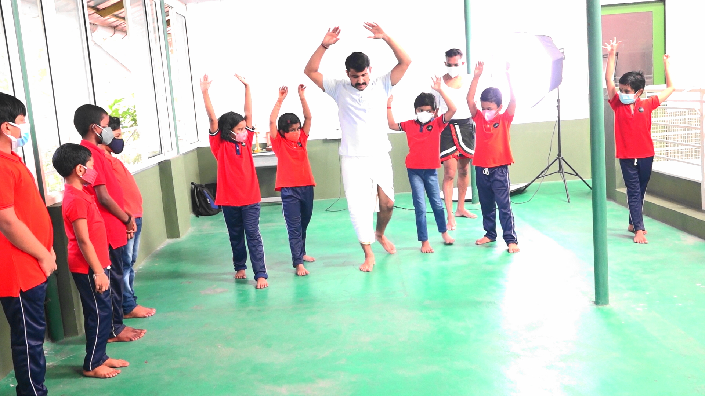
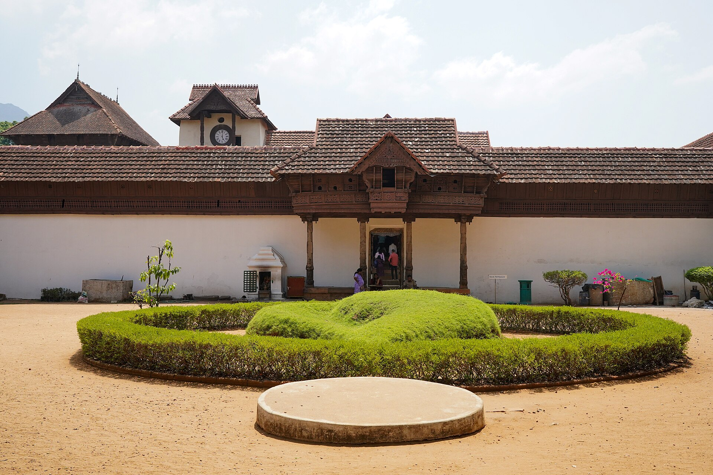

Vattiyoorkavu · Thiruvananthapuram
A school built on joyful learning, empathy, cultural identity, and civic responsibility, with Cambridge International learning and Kerala's culture alongside.
What We Stand For
At Ananthamurthy International School, character comes first. We nurture joyful learners who respect differences, care for their community, know where they come from, and take responsibility for the world around them.
It is also a different kind of school: high academic standards under the Cambridge International syllabus, modern cooperative learning, and Yoga, Kalarippayattu, Art & Craft, and Music as part of every student's week. English is the medium of instruction, with Malayalam and Hindi given equal importance.
A stress-free environment that nurtures lifelong curiosity.
Respect for differences, cooperative values, and care for those around us.
Knowing who we are through Kerala's heritage.

Cambridge Primary and Lower Secondary, blended with Kerala and Indian social studies, taught through cooperative classrooms and the 5E instructional model.
Visit Learning →
Kalarippayattu, Carnatic and Western music, and the Keraleeyam cultural curriculum, woven into every student's week.
Visit Programmes →
Reaching beyond, rooted in Kerala.
Our Guiding Idea
“There are only two lasting bequests we can hope to leave our children. One of these is roots, the other, wings.”
Wings & RootsThe idea behind our school
What We Offer

KG-1, ages 3–4, and KG-2, ages 4–5 — Cambridge Early Years.

Compulsory from Stage 1 onwards, with Madhava Matam CVN Kalari.

Carnatic vocal, Sopanasangeetham, folk songs, and Western music.

Kerala history and heritage, integrated with Malayalam — including visits to places like Padmanabhapuram Palace.
Reference photo, not the school's own — Timothy A. Gonsalves / Wikimedia Commons, CC BY-SA 4.0